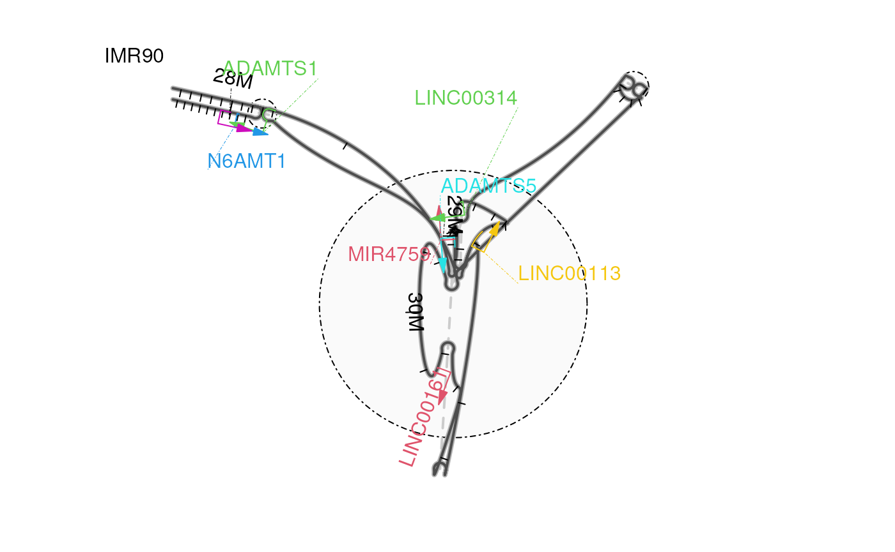
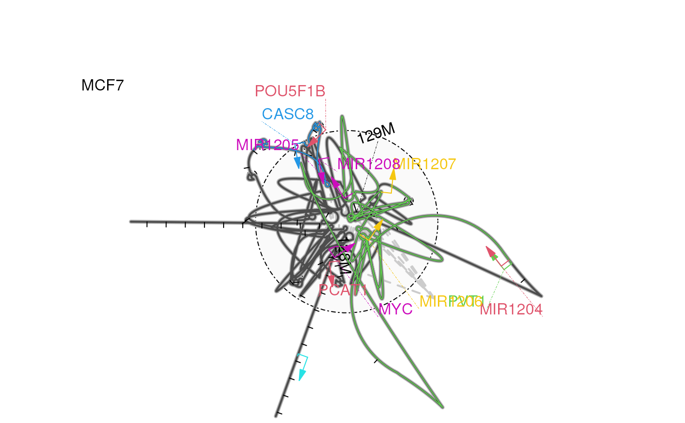

loopBouquetPlot example for Human
HiC and ChIA-PET datavignettes/HumanSample.Rmd
HumanSample.RmdTo illustrate how loopBouquetPlot can be used to help
the comparison of different types of datasets, the humnan cellline
data2 will be plotted here.
There are several steps to repeat the plots:
Prepare the annotations
Import interactions
Import the ATAC-seq signals if available
Plot the data by loopBouquetPlot function.
Chromatin loops for human cell lines were identified at kilobase
resolution using in situ Hi-C sequencing1. In this use case, we will showcase
the capabilities of loopBouquetPlot for bin-based
loops.
## define the data file path
extdata <- system.file('extdata',
'GSE63525',
package='loopBouquetPlotDocumentation')
readData <- function(HiCCUPS_looplist_file){
loops <- read.delim(
file.path(extdata,
HiCCUPS_looplist_file))
## Use observed value/ expected value (donut)
loops <- with(loops, GInteractions(GRanges(chr1, IRanges(x1+1, x2)),
GRanges(chr2, IRanges(y1+1, y2)),
score = log2(o) - log2(e_donut)))
## change the chromosome names style to UCSC (with prefix 'chr')
seqlevelsStyle(loops) <- 'UCSC'
return(loops)
}
GM12878_gi <- readData('GSE63525_GM12878_HiCCUPS_looplist.txt.gz')
IMR90_gi <- readData('GSE63525_IMR90_HiCCUPS_looplist.txt.gz')
hs_feature <- genes(TxDb.Hsapiens.UCSC.hg19.knownGene)
hs_feature$symbol <- ChIPpeakAnno::xget(hs_feature$gene_id, org.Hs.egSYMBOL)
## define the plot regions
selectMarkers <- c('ADAMTS1', 'ADAMTS5', 'N6AMT1')
hs_range <- hs_feature[hs_feature$symbol %in% selectMarkers]
hs_rd <- range(hs_range)
# subset the data
IMR90_gi_sub <- subsetByOverlaps(IMR90_gi, hs_rd)
GM12878_gi_sub <- subsetByOverlaps(GM12878_gi, hs_rd)
## prepare the annotations
feature.gr <- subsetByOverlaps(hs_feature,
range(c(regions(IMR90_gi_sub),
regions(GM12878_gi_sub))))
feature.gr <- feature.gr[seqnames(feature.gr) %in% seqnames(hs_rd)]
feature.gr$label <- feature.gr$symbol
## not label the gene outside the range
feature.gr$label[end(feature.gr)<start(hs_rd) | start(feature.gr)>end(hs_rd)] <- NA
## assign colors for the genes
set.seed(1)
feature.gr$col <- sample(2:7, length(feature.gr), replace=TRUE)
## set the annotation type to 'gene'
feature.gr$type <- 'gene'
feature.gr## GRanges object with 8 ranges and 5 metadata columns:
## seqnames ranges strand | gene_id symbol
## <Rle> <IRanges> <Rle> | <character> <character>
## 100616243 chr21 28326280-28326362 + | 100616243 MIR4759
## 11096 chr21 28290231-28339439 - | 11096 ADAMTS5
## 118421 chr21 29911640-29912677 + | 118421 LINC00161
## 246705 chr21 29385682-29395528 + | 246705 LINC00314
## 26046 chr21 30300466-30365277 - | 26046 LTN1
## 29104 chr21 30244513-30257695 - | 29104 N6AMT1
## 54088 chr21 29094698-29123552 + | 54088 LINC00113
## 9510 chr21 28208606-28217728 - | 9510 ADAMTS1
## label col type
## <character> <integer> <character>
## 100616243 MIR4759 2 gene
## 11096 ADAMTS5 5 gene
## 118421 LINC00161 2 gene
## 246705 LINC00314 3 gene
## 26046 <NA> 6 gene
## 29104 N6AMT1 4 gene
## 54088 LINC00113 7 gene
## 9510 ADAMTS1 3 gene
## -------
## seqinfo: 93 sequences (1 circular) from hg19 genomeloopBouquetPlot function.
op <- par(mfrow=c(1, 2))
for(.gi in c('IMR90', 'GM12878')){
set.seed(123)
## plot data
loopBouquetPlot(gi = get(paste0(.gi, '_gi_sub')),
range = hs_rd,
feature.gr = feature.gr,
coor_tick_unit = 5e4,
coor_mark_interval = 1e6,
lwd.gene = 1,
col.backbone = 'gray30',
method = 2)
## mark the sub-figure
grid::grid.text(label=.gi, x=.15, y=.9)
}
par(op)
In the figure, the LINC00161 and LINC00314 (Long Intergenic Non-Protein Coding RNA 161 and 314, both of them are reported in development of bone4) may also be involved in the ADAMTS5 gene regulation and expression event for cell IMR90 but not GM12878.
The Chromatin Interaction Analysis with Paired-End-Tag sequencing
(ChIA-PET) method encompasses chromatin immunoprecipitation (ChIP) to
enrich long-range chromatin interactions bound to a protein of interest.
Here, we visualize the chromatin interactions around the MYC
gene bound by RNA polymerase II (RNAPII)2 using loopBouquetPlot.
In this example, we highlight the effectiveness of
loopBouquetPlot for peak-based loops.
hs_rd <- GRanges('chr8:127840755-129655603')
## define the data file path
extdata <- system.file('extdata',
'GSE33664',
package='loopBouquetPlotDocumentation')
readData <- function(interaction_file){
loops <- read.delim(
file.path(extdata,
interaction_file),
header=FALSE)
## Use observed value/ expected value (donut)
loops <- with(loops, GInteractions(GRanges(V1, IRanges(V2+1, V3)),
GRanges(V4, IRanges(V5+1, V6)),
score = V8))
## change the chromosome names style to UCSC (with prefix 'chr')
seqlevelsStyle(loops) <- 'UCSC'
return(loops)
}
K562_gi <- readData('K562.bedpe.gz')
MCF7_gi <- readData('MCF7.bedpe.gz')
K562_gi_sub <- subsetByOverlaps(K562_gi, hs_rd)
MCF7_gi_sub <- subsetByOverlaps(MCF7_gi, hs_rd)
## prepare the annotations
feature.gr <- subsetByOverlaps(hs_feature,
range(c(regions(K562_gi_sub),
regions(MCF7_gi_sub))))
feature.gr <- feature.gr[seqnames(feature.gr) %in% seqnames(hs_rd)]
feature.gr$label <- feature.gr$symbol
## not label the gene outside the range
feature.gr$label[end(feature.gr)<start(hs_rd) | start(feature.gr)>end(hs_rd)] <- NA
## assign colors for the genes
set.seed(2)
feature.gr$col <- sample(2:7, length(feature.gr), replace=TRUE)
## set the annotation type to 'gene'
feature.gr$type <- 'gene'
feature.gr## GRanges object with 11 ranges and 5 metadata columns:
## seqnames ranges strand | gene_id symbol
## <Rle> <IRanges> <Rle> | <character> <character>
## 100302161 chr8 128972879-128972941 + | 100302161 MIR1205
## 100302170 chr8 129021144-129021202 + | 100302170 MIR1206
## 100302175 chr8 129061398-129061484 + | 100302175 MIR1207
## 100302185 chr8 128808208-128808274 + | 100302185 MIR1204
## 100302281 chr8 129162362-129162434 + | 100302281 MIR1208
## 100750225 chr8 128025399-128033259 + | 100750225 PCAT1
## 157638 chr8 127564683-127570711 - | 157638 LRATD2
## 4609 chr8 128747765-128753680 + | 4609 MYC
## 5462 chr8 128427857-128429441 + | 5462 POU5F1B
## 5820 chr8 128806803-129113499 + | 5820 PVT1
## 727677 chr8 128301929-128494384 - | 727677 CASC8
## label col type
## <character> <integer> <character>
## 100302161 MIR1205 6 gene
## 100302170 MIR1206 7 gene
## 100302175 MIR1207 7 gene
## 100302185 MIR1204 2 gene
## 100302281 MIR1208 6 gene
## 100750225 PCAT1 2 gene
## 157638 <NA> 5 gene
## 4609 MYC 6 gene
## 5462 POU5F1B 2 gene
## 5820 PVT1 3 gene
## 727677 CASC8 4 gene
## -------
## seqinfo: 93 sequences (1 circular) from hg19 genomeloopBouquetPlot function.
op <- par(mfrow=c(1, 2))
for(.gi in c('K562', 'MCF7')){
set.seed(123)
## plot data
loopBouquetPlot(gi = get(paste0(.gi, '_gi_sub')),
range = hs_rd,
feature.gr = feature.gr,
coor_tick_unit = 5e4,
coor_mark_interval = 1e6,
lwd.gene = 1,
col.backbone = 'gray30')
## mark the sub-figure
grid::grid.text(label=.gi, x=.15, y=.8)
}
par(op) In the figure, the upstream genes of MYC, such as CASC8, POU5F1B, and PCAT1 etc., are released from the complexity of RNAPII-bound-chromatin complex with CASC11, MYC, PVT1, etc in cell line K562 compared to MCF7.
## R Under development (unstable) (2024-03-06 r86056)
## Platform: x86_64-pc-linux-gnu
## Running under: Ubuntu 22.04.4 LTS
##
## Matrix products: default
## BLAS: /usr/lib/x86_64-linux-gnu/openblas-pthread/libblas.so.3
## LAPACK: /usr/lib/x86_64-linux-gnu/openblas-pthread/libopenblasp-r0.3.20.so; LAPACK version 3.10.0
##
## locale:
## [1] LC_CTYPE=en_US.UTF-8 LC_NUMERIC=C
## [3] LC_TIME=en_US.UTF-8 LC_COLLATE=en_US.UTF-8
## [5] LC_MONETARY=en_US.UTF-8 LC_MESSAGES=en_US.UTF-8
## [7] LC_PAPER=en_US.UTF-8 LC_NAME=C
## [9] LC_ADDRESS=C LC_TELEPHONE=C
## [11] LC_MEASUREMENT=en_US.UTF-8 LC_IDENTIFICATION=C
##
## time zone: Etc/UTC
## tzcode source: system (glibc)
##
## attached base packages:
## [1] grid stats4 stats graphics grDevices utils datasets
## [8] methods base
##
## other attached packages:
## [1] ChIPpeakAnno_3.37.4
## [2] rtracklayer_1.63.0
## [3] org.Hs.eg.db_3.18.0
## [4] TxDb.Hsapiens.UCSC.hg19.knownGene_3.2.2
## [5] GenomicFeatures_1.55.3
## [6] AnnotationDbi_1.65.2
## [7] trackViewer_1.39.15
## [8] InteractionSet_1.31.0
## [9] SummarizedExperiment_1.33.3
## [10] Biobase_2.63.0
## [11] MatrixGenerics_1.15.0
## [12] matrixStats_1.2.0
## [13] GenomicRanges_1.55.3
## [14] GenomeInfoDb_1.39.8
## [15] IRanges_2.37.1
## [16] S4Vectors_0.41.4
## [17] BiocGenerics_0.49.1
##
## loaded via a namespace (and not attached):
## [1] splines_4.4.0 BiocIO_1.13.0 bitops_1.0-7
## [4] filelock_1.0.3 tibble_3.2.1 graph_1.81.0
## [7] XML_3.99-0.16.1 rpart_4.1.23 lifecycle_1.0.4
## [10] httr2_1.0.0 lattice_0.22-5 ensembldb_2.27.1
## [13] MASS_7.3-60.2 backports_1.4.1 magrittr_2.0.3
## [16] Hmisc_5.1-2 sass_0.4.8 rmarkdown_2.26
## [19] jquerylib_0.1.4 yaml_2.3.8 plotrix_3.8-4
## [22] Gviz_1.47.1 DBI_1.2.2 RColorBrewer_1.1-3
## [25] abind_1.4-5 zlibbioc_1.49.0 purrr_1.0.2
## [28] AnnotationFilter_1.27.0 biovizBase_1.51.0 RCurl_1.98-1.14
## [31] nnet_7.3-19 VariantAnnotation_1.49.6 rappdirs_0.3.3
## [34] GenomeInfoDbData_1.2.11 grImport_0.9-7 pkgdown_2.0.7
## [37] codetools_0.2-19 DelayedArray_0.29.9 xml2_1.3.6
## [40] tidyselect_1.2.1 futile.logger_1.4.3 universalmotif_1.21.3
## [43] BiocFileCache_2.11.1 base64enc_0.1-3 GenomicAlignments_1.39.4
## [46] jsonlite_1.8.8 multtest_2.59.0 Formula_1.2-5
## [49] survival_3.5-8 systemfonts_1.0.6 tools_4.4.0
## [52] progress_1.2.3 ragg_1.2.7 strawr_0.0.91
## [55] Rcpp_1.0.12 glue_1.7.0 gridExtra_2.3
## [58] SparseArray_1.3.4 xfun_0.42 dplyr_1.1.4
## [61] formatR_1.14 fastmap_1.1.1 latticeExtra_0.6-30
## [64] rhdf5filters_1.15.2 fansi_1.0.6 digest_0.6.35
## [67] R6_2.5.1 textshaping_0.3.7 colorspace_2.1-0
## [70] jpeg_0.1-10 dichromat_2.0-0.1 biomaRt_2.59.1
## [73] RSQLite_2.3.5 utf8_1.2.4 tidyr_1.3.1
## [76] generics_0.1.3 data.table_1.15.2 prettyunits_1.2.0
## [79] httr_1.4.7 htmlwidgets_1.6.4 S4Arrays_1.3.6
## [82] regioneR_1.35.0 pkgconfig_2.0.3 gtable_0.3.4
## [85] blob_1.2.4 XVector_0.43.1 htmltools_0.5.7
## [88] RBGL_1.79.0 ProtGenerics_1.35.3 scales_1.3.0
## [91] png_0.1-8 knitr_1.45 lambda.r_1.2.4
## [94] rstudioapi_0.15.0 rjson_0.2.21 checkmate_2.3.1
## [97] curl_5.2.1 cachem_1.0.8 rhdf5_2.47.6
## [100] stringr_1.5.1 parallel_4.4.0 foreign_0.8-86
## [103] restfulr_0.0.15 desc_1.4.3 pillar_1.9.0
## [106] vctrs_0.6.5 dbplyr_2.4.0 cluster_2.1.6
## [109] htmlTable_2.4.2 evaluate_0.23 VennDiagram_1.7.3
## [112] cli_3.6.2 compiler_4.4.0 futile.options_1.0.1
## [115] Rsamtools_2.19.3 rlang_1.1.3 crayon_1.5.2
## [118] interp_1.1-6 fs_1.6.3 stringi_1.8.3
## [121] deldir_2.0-4 BiocParallel_1.37.1 munsell_0.5.0
## [124] Biostrings_2.71.3 lazyeval_0.2.2 Matrix_1.6-5
## [127] BSgenome_1.71.2 hms_1.1.3 bit64_4.0.5
## [130] ggplot2_3.5.0 Rhdf5lib_1.25.1 KEGGREST_1.43.0
## [133] highr_0.10 igraph_2.0.3 memoise_2.0.1
## [136] bslib_0.6.1 bit_4.0.5